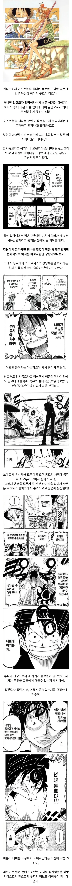
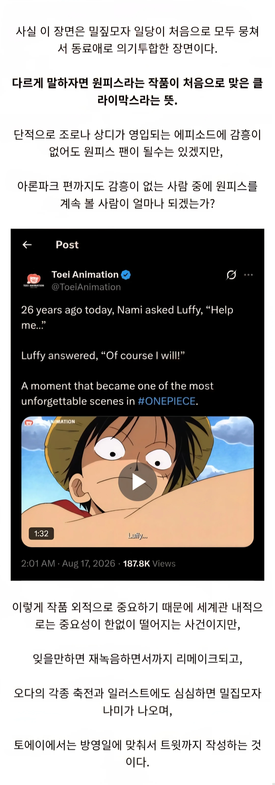
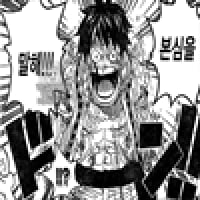

참된
호걸
거기 지나고 엘바프 도착한지 좀됨
아아 편집자님 이제야 당신의 뜻을 알겠습니다...
첫 현상금이 걸리면서 밀집모자 해적단 이름이 공식 등록이 된 느낌
밀.집모자
저때만 해도 나미랑 이성적으로 잘 될 줄 알았다; 밀짚모자도 맡기고 구원 서사도 있고 해서..
뭐야 정실 아녓어?
돈받고 할듯
뭐 야스는 좀 했겄지 다들
히토미연재분보니까 다들 잘되고있드라
루피도 카메라 꺼지면 어마무시하다
우솝 내려
첫짤 나미 발 ㅈㄴ 크네 오리발 필요없을듯
아론이 나미를 도구이자 노예로 취급... 후...
쐐기모양이라 좀 아프긴 할듯
오케바리!

응 나미 세탁기 수고~~
당시 아론은 지금보면 클리셰적인 악당인데 잘만든 캐릭터라는 생각이 드는 이유가 뭘까
그것이 클리셰니까
클리셰가 딱히 나쁜 걸 의미하는 게 아니니까
니 닉이 슴슴하기 그지없지만 개씹천박해보이는 이유랑 같은결이 아닌가 싶다
저때 진짜 좋았지
정상결전까지 좋았지
어인섬부터 좀....
바톤터치하고 조로 날아가는게 맛도리였지 ㅋㅋ
나미 어인들이랑 존나했자너
루피가 나미한테 밀집모자 씌워주는 장면은 지금 봐도 소름 돋음
사실상 원피스 에피소드 구성의 완성본임
저 이후로는 모든 플롯이 저 구성의 반복이더라
피해자를 발생시킨 적 집단을 마주짐 - 선장 1:1 and 간부진 1:1 매치 - 밀짚모자 해적단 승리, 피해자 구제
맞음 ㅅㅂ ㅠㅠ 한두명 볼모로 잡히고 울고 살려달라하고
종치거나 뭐 상징을 쁘수거나 악당 날라가거나
근데 그 와중에 따로국밥이란 말에서 연식이 좀 느껴지네… 대체 이거 언제 쓰인 글이냐
나중에 문어새끼 용서해주는거보고 존나 짜쳤음 ㅋㅋ 세탁이 불가능한 새끼들인데
마지막에 열받으라고 밀 집 모자로 쓴거 화나네
하늘섬 플롯이 여기서 살짝 빗겨난 느낌이라 이질적이었는데 노랜드 스토리 자체가 너무 좋았음
저때 나미는 루피꺼임 ㅋㅋ사황하고 싸울때
루피 죽이고 내려왔다니깐
나미가 대놓고 루피에 대한 마음 얘기할때 좀 찡하고 정실은 나미.확정이다 싶었음
애초에 패황색패기로 루피 때릴수 있는것도 보여주며 정실력이 젤 높음 ㅋㅋ
루피가 잘생겨보여서 어이가없네
아론제국의 역습 봐야겠다
와 맞어 이 감정 잊고있었네
kbs에서 원피스 해주던시절 아론편 방영할때부터 보기 시작했는데 앞에 내용 하나도 모르는데도 겁나 재밌길래 입문했음
루피의 저 너한테 이기는거 저장면 내가 살면서 본 모든 만화 다통틀어서 가장 좋아하는 장면임 어렸을때 저장면 보고 진짜 온몸에 소름이 돋을정도로 멋있었음
저 때 그림 얼마나 보기 좋냐 지금은 ㅅㅂ